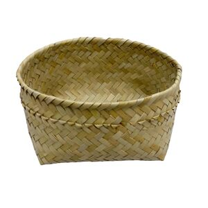

ⲃⲓⲗ F v ⲃⲓⲣ.
41b
ⲃⲓⲣ SA2B, ⲃⲏⲗ Sf (Glos 114), ⲃⲓⲗ, ϥⲓⲗ F nn m (f P 44 128, Glos l c); ⲃⲓⲣⲉ (CO 335, Ep 547, BAp 107), ⲃⲁⲓⲣⲉ S (ST 349, Bodl(P) b 9), ⲃⲁⲓⲣⲓ B (HL 97, ib ⲃⲓⲣ, MG 25 373, K 151) f; pl ⲃⲣⲏⲟⲩⲉ S قفافة P 44 128 (only), ⲃⲣⲏⲟⲩⲓ B Mallon 143, Lab (whence ?), basket of palm-leaf (v Ep 1 155, also 67, 72): C 89 10 = MG 17 350 قفة, P 44, K ut sup; Mt 15 37, Mk 8 8 SB (cf Lu 9 17 ⲕⲟⲧ SB) σπυρίς; Jo 6 13 A2 (SB ⲕⲟⲧ) κόφινος; Glos l c S γυργαθός; Miss 4 636 S, CO 352 S for bread (cf WS 153 n), BAp 107 S for cheese, CO 465 S for wool, ib 335 S for fuel, LAA 543 F = P 12918 103 S = EW 38 B, O'LearyH 3, Ryl 319 S for straw, BAp 54 S κόφ., ShC 73 152 S for earth, C 89 10 B = Miss 4 537 S σπυρίδιον for sand; Z 296, 300 S, MG 25 204 B σπυρίδ., Z 338 S = MG 25 209 B, ib 70, 200 B, HL l c B made by hermits; in Ac 9 25 SB σπυρίς holds a man. ⲃⲓⲣ, ⲃⲓⲣⲉ confused ? with βήριν = πήριον (πήρἀ), e g CDan 34.
42a
ⲃⲁⲓⲣⲉ, ⲃⲓⲣⲉ S, ⲃⲁⲓⲣⲓ B v ⲃⲓⲣ.
623b
ϥⲓⲗ F v ⲃⲓⲣ.
| view | ⲥⲁⲗⲟ, ⲥⲁⲗⲱ, ⲥⲁⲣⲟ S | (noun female) basket1401 |
| view | ϫⲁⲛⲟ B | (noun male) basket (?)2421 |
| view | ϭⲁⲣϭⲁⲧⲁⲛⲉ, ϭⲁⲣⲁⲧⲏⲛⲏ S | (noun female) bread-basket or sim2621 |
| view | ⲃⲉⲣⲥⲓϯ B | (noun male) basket holding bread2730 |
| view | ⲃⲛⲛⲉ SAL ⲃⲉⲛⲓ B ⲃⲏⲛⲓ, ⲃⲏⲛⲛⲓ F ⲃⲛ- S ⲃⲉⲛ- NH | (noun female) date palm-tree
[φοινιξ]
― as pl ― opp ϣⲏⲛ its fruit, dates406 |
| view | ϫⲛⲟϥ, ϫⲉⲛⲟϥ, ϫⲉⲛⲟⲃ S ϫⲛⲁϥ Sf ϭⲛⲟϥ, ϣⲛⲟϥ, ϣⲛⲟⲩϥ B | (noun male) basket, crate2427 |